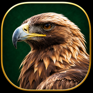

Bienvenue dans ton carnet de terrain
Enregistre tes observations de rapaces et d’autres oiseaux, retrouve leur localisation, décris les conditions de prise de vue et rattache chaque rencontre à un voyage des Carnets de l’Épervier.

Les Carnets de l’ÉpervierMon atlas d’observations ornithologiques
Enregistre tes observations de rapaces et d’autres oiseaux, retrouve leur localisation, décris les conditions de prise de vue et rattache chaque rencontre à un voyage des Carnets de l’Épervier.
Explore les reliefs, les vallées, cols et falaises ; les marqueurs représentent uniquement tes observations géolocalisées. Bascule entre une carte OpenStreetMap et une couche topographique.
Le fond topographique provient d’un service externe et nécessite Internet. Il est soumis à ses conditions d’utilisation. Ne partage pas les coordonnées sensibles de nids.
La projection est indicative. Pour naviguer sur une vraie carte routière ou satellite, utilise les liens « Ouvrir sur OpenStreetMap » associés aux points.
Chaque nom de voyage renseigné dans une observation crée automatiquement un carnet regroupant ses données.
Explore les espèces du catalogue. Fiches originales pour les espèces prioritaires, liens vers photographies et cris provenant de bibliothèques spécialisées. Les images et sons externes ne sont ni copiés ni hébergés ici.
Stockage local sur ce PC : tes fichiers sont enregistrés dans IndexedDB, à l’intérieur de ce navigateur. Ils ne sont pas envoyés sur GitHub, ne se synchronisent pas et peuvent être perdus si les données du navigateur sont effacées. Conserve des copies originales ailleurs.
Ajoute toutes tes anciennes observations depuis le fichier MyEBirdData.csv ou directement depuis l’archive ebird_….zip téléchargée sur eBird. Fusion uniquement : les fiches déjà présentes sont conservées et les imports eBird répétés sont dédoublonnés.
Par sécurité, télécharge d’abord ta sauvegarde JSON ci-dessous. L’import eBird conserve les identifiants de liste, les noms scientifiques, les observations et les références Macaulay quand disponibles. Le nombre « X » d’eBird reste « X » (effectif non chiffré). Les photos elles-mêmes ne figurent pas dans le CSV. Tes données importées restent sur cet appareil ; GitHub Pages n’assure aucune synchronisation.
Les observations sont conservées localement dans ce navigateur sur cet appareil. Elles ne sont pas synchronisées automatiquement entre ton PC et ton téléphone. Fais régulièrement une sauvegarde JSON, puis importe-la sur l’autre appareil.
L’import remplace les observations locales après confirmation. Le CSV est destiné à l’analyse et à la préparation de données, pas à un téléversement eBird garanti : le format d’import eBird dépend du protocole et des champs exigés.
PC : ouvre index.html dans Chrome ou Edge. Pour un fonctionnement fiable et l’installation comme application, publie le dossier sur un hébergement HTTPS statique.
iPhone : ouvre l’adresse HTTPS publiée dans Safari, puis « Partager » → « Sur l’écran d’accueil ». Un simple fichier HTML ouvert depuis Fichiers ne garantit pas la conservation des données ni toutes les fonctions.
Synchronisation : cette version ne possède pas de compte cloud. Les exports/imports JSON constituent la méthode de transfert entre appareils.